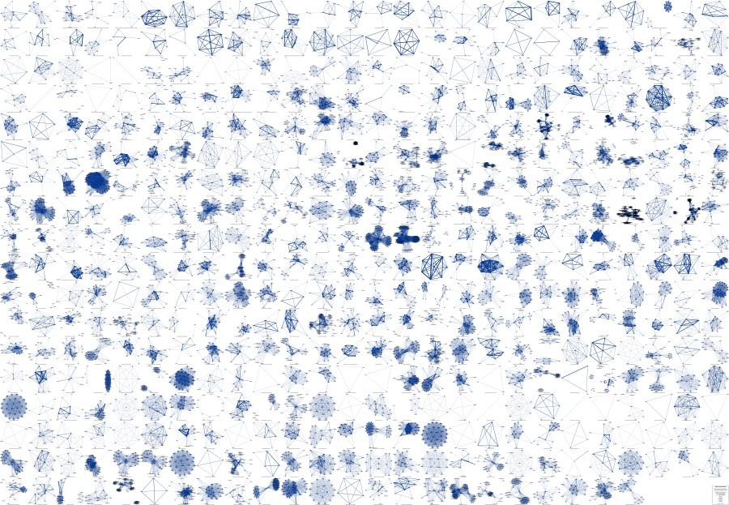

Digitale Netzwerkanalyse dramatischer Texte
Peer Trilcke¹, Mathias Göbel², Dario Kampkaspar³
- Seminar für Deutsche Philologie, Univ. Göttingen
- Staats- und Universitätsbibliothek Göttingen
- Herzog August Bibliothek Wolfenbüttel
Präsentation: http://lina.digital/presentations/2016-berlin/
Berlin, Tagung »Digitale Geschichtswissenschaft«, 8.2.2016
Präsentation lizenziert unter CC-BY 4.0.
Gliederung
- Das dlina-Projekt. Ein Überblick
- Der Prozess der Datenedition
- Play(s). Crowd Editing
- »from numbers to meaning«
1. Das dlina-Projekt. Ein Überblick
1. Das dlina-Projekt. Ein Überblick
465 Dramennetzwerke
1. Das dlina-Projekt. Ein Überblick
Zentralitätswerte zu Figuren aus »Emilia Galotti«
| Character | Degree | Betweenness Centrality | Average Distance | Closeness Centrality |
|---|---|---|---|---|
| MARINELLI | 9 | 16.3 | 1.25 | 0.8 |
| DER PRINZ | 8 | 30.83 | 1.33 | 0.75 |
| CLAUDIA GALOTTI | 7 | 3.0 | 1.67 | 0.6 |
| ODOARDO GALOTTI | 6 | 3.63 | 1.5 | 0.67 |
| EMILIA | 6 | 3.63 | 1.5 | 0.67 |
| PIRRO | 5 | 1.75 | 1.83 | 0.55 |
| ORSINA | 4 | 0.8 | 1.67 | 0.6 |
| APPIANI | 4 | 0.25 | 1.92 | 0.52 |
| BATTISTA | 4 | 0.8 | 1.67 | 0.6 |
| ANGELO | 2 | 2.08 | 0.48 | |
| DER KAMMERDIENER | 1 | 2.25 | 0.44 | |
| CONTI | 1 | 2.25 | 0.44 | |
| CAMILLO ROTA | 1 | 2.25 | 0.44 |
Ausschnitt aus der Datei drama_character_values.html. Werte berechnet mit dramavis (Frank Fischer / Christopher Kittel), siehe Blogpost zu dramavis sowie dramavis bei GitHub
1. Das dlina-Projekt. Ein Überblick
»The general methodological problem of the digital humanities can be bluntly stated: How do we get from numbers to meaning? The objects being tracked, the evidence collected, the ways they’re analyzed—all of these are quantitative. How to move from this kind of evidence and object to qualitative arguments and insights about humanistic subjects—culture, literature, art, etc.—is not clear.«
Ryan Heuser & Long Le-Khac: A Quantitativ Literary History of 2,958 Nineteenth-Century British Novels: The Semantic Cohort Method (= Pamphlets of the Stanford Literary Lab 4), Mai 2012, S. 46. URL: http://litlab.stanford.edu/LiteraryLabPamphlet4.pdf.
1. Das dlina-Projekt. Ein Überblick
Wer wir sind
- dlina = digital literary network analysis
- interinstitutionelle Arbeitsgruppe aus Literaturwissenschaftlern und Informatikern
- Kernmitglieder: Frank Fischer, Dario Kampkaspar, Mathias Göbel, Peer Trilcke
- assoziierte Mitglieder derzeit: Christopher Kittel, Hanna-Lena Meiners
1. Das dlina-Projekt. Ein Überblick
Was wir machen
- 2013 - Vorarbeiten (theoretische Sondierung u. Vorstudie)
- 2014 - Gründung der Arbeitsgruppe
- seit 2015 - Dokumentation auf Bloglina.digital und bei GitHub
- laufende Teilprojekte
- dramavis (Frank Fischer & Christopher Kittel), siehe Dramavis bei GitHub und Blogpost zu dramavis
- play(s) (Mathias Göbel & Hanna-Lena Meiners), siehe https://personae.gcdh.de/
1. Das dlina-Projekt. Ein Überblick
Ziel: Extraktion und Analyse von Netzwerkdaten aus dramatischen Texten
| Rohkorpus | Struktur- und Metadaten | Werte und Visualisierungen | ||
| ➞ | ➞ | |||
| ›Preprocessing‹ Datenextraktion und -edition |
›Postprocessing‹ Datenanalyse und -visualisierung |
1. Das dlina-Projekt. Ein Überblick
Korpora mit deutschsprachigen Dramen
- Deutsches Text Archiv: sehr gute Qualität, aber wenige Dramen (ca. 70)
- Projekt Gutenberg-DE: sehr schlechte Qualität, aber viele Dramen (über 600)
- TextGrid Repository: mittlere Qualität und viele Dramen (je nach Zählung: 690 oder 666, siehe Blogpost »A (Not So) Simple Question«)
1. Das dlina-Projekt. Ein Überblick
Das »dlina Corpus 15.07«
- entstanden auf Basis des TextGrid Repository
- umfasst derzeit 465 deutschsprachige Dramen aus der Zeit 1731 bis 1929
- zur Zusammensetzung siehe Blogpost Introducing DLINA Corpus 15.07
2. Der Prozess der Datenedition
2. Der Prozess der Datenedition
Fokus auf spezifische Strukturdaten, i.e. Netzwerkdaten
- Netzwerkdaten = Interaktionen zwischen Figuren
- Operationalisierung von Interaktion:
- Wenn zwei Figuren innerhalb eines vorgegebenen Segments (Szene/Auftritt; Akt/Aufzug) des Dramas jeweils einen Sprechakt vollziehen, dann interagieren sie miteinander.
2. Der Prozess der Datenedition
Annahme: Rudimentäre Struktur eines Dramas
<segment>
<sp who="#speaker1"></sp>
<sp who="#speaker2"></sp>
<sp who="#speaker3"></sp>
<sp who="#speaker1"></sp>
<sp who="#speaker3"></sp>
...
</segment>
<segment>
<sp who="#speaker4"></sp>
<sp who="#speaker2"></sp>
...
</segment>
...2. Der Prozess der Datenedition
Mangelhafte Datenqualität
- Fehler in Folge der automatischen TEI-Konvertierung, z.B.
- OCR-Fehler (etwa statt »Der König« -> »Der Kbnig«);
- etc.
- Intrinsische Probleme, z.B.
- Variationen bei den Figurenbezeichnungen (etwa »Der König« und »König«; oder »Claudia Galloti« und »Claudia»);
- Kollektiva (etwa »Beide«, »Alle« usw.);
- etc.
2. Der Prozess der Datenedition
Edition der Strukturdaten
- Formulierung von Editionsregeln (siehe Blogpost Editing Rules)
- Edition nicht in der Volltext-TEI-Datei, sondern in einem eigenen ›Strukturdatenformat‹ (lina-Zwischenformat)
2. Der Prozess der Datenedition
Das lina-Zwischenformat (lina.xml) - Idee
- Ergebnis der Extraktion von (noch unsauberen) Strukturdaten aus den Texten des Korpus
- stellt eine strukturelle Abstraktion des dramatischen Textes dar
- Vorteile z.B.:
- die Originaldateien bleiben unverändert (u.a. Nachvollziehbarkeit)
- das Zwischenformat ist sehr viel übersichtlicher (Einfachheit)
2. Der Prozess der Datenedition
Das lina-Zwischenformat (lina.xml) - Features
- wird für jedes Drama erstellt und ist Basis für die Analysen und Visualisierungen
- ist eine XML-Datei, validiert gegen ein eigenes RNG Schema
- speichert neben den Strukturdaten auch einige Metadaten
- bietet die Möglichkeit, editorische Entscheidungen zu dokumentieren
2. Der Prozess der Datenedition
Das lina-Zwischenformat (lina.xml) - Extras
- Erfasung weiterer quantitativer Daten, z.B.
- Anzahl der Sprechakte jeder Figur
- Anzahl der gesprochenen Wörter pro Figur
- siehe auch Blogpost The Biggest Chatterbox in German Literature
- Zum lina-Zwischenformat siehe auch Blogpost Introducing Our Zwischenformat
3. Play(s). Crowd Editing
3. Play(s). Crowd Editing
Bei insgesamt 666 Dramen aus dem TextGrid-Repository (inkl. der 465 aus dem DLINA-Subkorpus) gilt es, diese Probleme zu lösen.
20118 unterschiedliche Werte innerhalbt von tei:speaker müssen hierfür überprüft und ausgezeichnet werden, so dass schließlich alle 438457 Sprechakte mit einem who- Attribut versehen werden können.
3. Play(s). Crowd Editing
Gamification
The process of game-thinking and game mechanics to engage users and solve problems.
Vgl. Zichermann, G. & Cunningham, C. (2011): Gamification by design: Implementing Game Mechanics in Web and Mobile Apps, S. xiv.
3. Play(s). Crowd Editing
Social Editing
The social edition is a work that brings communities together to engage in conversation around a text formed and reformed through an ongoing, iterative, public editorial process.
User:Cultures92: "The Devonshire Manuscript/A Note on this Edition", https://en.wikibooks.org/wiki /The_Devonshire_Manuscript/A_Note_on_this_Edition
3. Play(s). Crowd Editing
Android App

3. Play(s). Crowd Editing
Android App
3. Play(s). Crowd Editing
Design/Status
- Server-Client-Lösung
- Datenbestand beliebig erweiterbar
- Aufgaben beliebig erweiterbar
- Zentrale Verwaltung der Eingaben
- hier ausschließlich SSL-verschlüsselt
- WebView App
- Vielzahl unterstützer Systeme (Android, Firefox OS)
- App-Entwicklung = Webseiten-Entwicklung
- dennoch folgt die App Googles Material Design
Android App derzeit in geschlossener Alpha via Play Store, offene Beta für nächste Woche geplant
4. »from numbers to meaning«
4. »from numbers to meaning«
Netzwerkgröße von 465 deutschsprachigen Dramen (1731-1929) – Median pro Jahrzehnt
Siehe Blogpost 200 Years of Literary Network Data/
4. »from numbers to meaning«
Dichte deutschsprachiger Dramen (1731-1929) – Median nach Genre
Siehe Blogpost Network Values by Genre
4. »from numbers to meaning«
Laufende Forschung: Netzwerktypen

Abb. aus Duncan J. Watts & Steven H. Strogatz: Collective dynamics of ›small world‹ networks.
In: Nature 393, 4.6.1998, S. 440-442, hier S. 441.
Infos und Updates
Präsentation: http://lina.digital/presentations/2016-berlin/
Blog: https://dlina.github.io/
Github: https://github.com/dlina
- Twitter:
- #dlina
- Frank Fischer (@umblaetterer)
- Mathias Göbel (@goebel_m)
- Peer Trilcke (@peertrilcke)
Vorträge DHd 2016 in Leipzig
| Do. 10.3. 9.00-10.30 |
Dramen als small worlds? Netzwerkdaten zur Geschichte und Typologie deutschsprachiger Dramen 1730-1930 |
Fischer, Göbel, Kampkaspar, Trilcke |
| Do. 10.3. 11.00-12.30 |
Play(s): Crowdbasierte Anreicherung eines literarischen Volltext-Korpus |
Göbel, Meiners |